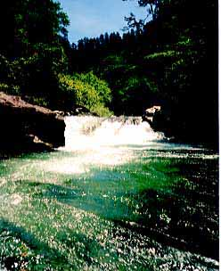
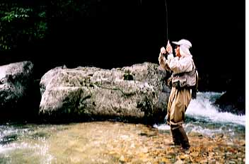
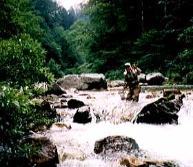

エッセイ
盛夏の白日夢
夜を徹してのドライブの後、薄明りのうちに釣り始めたものの、ドライにもニンフにもそれらしい反応が無いまま、もう午前10時を過ぎていた。
釣友の川本君に先行して釣り上がっていた私は、魚止めの滝が見えるカーブまで来てしまっていた。
「この滝壷には絶対大物がいるだろうけど、フライでは無理だな」

と、自分の腕の未熟さを釣り方に転嫁して、あきらめ半分で滝壷の淵を望む岩盤に登る。やや傾いてはいるが、六畳ほどの広さの岩盤の上に腰を下ろし、重いベストを脱いでくつろぐことにする。川本君は丁寧に釣り上がって来るようだ。
ここ１週間というもの、台風くずれの低気圧が居座ったせいで雨模様の天気が続き、平水時よりも30センチほど水かさが増している。水温も15度と８月にしては低い。魚止めの滝からは白い奔流が轟々と青黒い淵へと落下し、勢いを増した流れが足下の岩盤をかすめて下流へと突進していく。
奔流の向こう側には魅力的な淵の淀みがゆっくりと渦を巻いているのだが、ドライフライを投げれば一瞬で手前の流れにラインが奪われ、手持ちのニンフの一番重いのを投げても淵の底にはとうてい届かない。もう幾度も挑戦してはあえない撤退を繰り返してきたので、今日はキャストする気にもなれない。
ぼーっと座り込んで高見の見物を決め込んでいると、滝の対岸の傾斜した岩が不自然に削られて階段状の水路になっているのがわかった。
「ふーん、あそこなら魚が遡れそうだな。しかしどうもあれは人が削ったようだな....」
さらに観察を続けると、その水路の最下段は淵の水面まで達しており、かなり昔に人力で岩を削って作った魚道のように見えた。おそらく、はるかな昔、下流から遡上する鱒の行方を阻むこの滝に、上流の村の人が魚道を作ったのであろう。それにしても金槌と石鑿であれだけの岩を削るには大変な苦労だったろうな....などと感慨にふけっている私の目を、白い奔流の中を滑り落ちる黒い影がかすめた。
「？！、なんだっ？」
ほんの一瞬しか見えなかったが、その魚影の頭部はゆうに私の手のひらほどもあったようだ。
『サクラマスか岩魚か？ あの黒い色なら岩魚だろうか？ 流れの中を落ちていったようだが上流から流されてきたのか？ いや、あの魚体ならこの程度の増水では流されるようなことはあるまい。 おそらく下流のダム湖のバックウォーターから遡上して来て、必死のジャンプを試みたのだろう...』
ぽつんと岩の上に座り込み、ひとりでいろんな想像をめぐらせる。
『下流から遡上してきたとしたら、産卵のためか。それにしてもこの滝の落差は越えられまい。かといって対岸の古い魚道を遡るには水量が少なすぎて無理だろう...』
遡上してきた魚なら、もう一度くらいジャンプしてもよさそうだと考え、さっき魚影が落下していったあたりを凝視しつづける。 五分、そして十分が過ぎた。雲間から顔を出した八月の太陽が岩盤の上をジリジリと炙り始め、眉毛から汗が滴り始める。
「！！」
一瞬、落ち込みの白泡から跳躍した魚体が浅い放物線を描いて奔流へと吸い込まれていった。
『あれはすごい！50センチはある！』
残像となった魚影は、黒褐色の背中と白い腹部の鮮やかな岩魚だった。滝の落ち込みの直下にはほとんど止水域はなく、白泡が渦巻くほんの１ｍほどのたるみがあるだけなのに、そのわずかな助走水域から逆落としの流れへとひたすら跳躍する岩魚のひたむきさに、私は言葉もなく白い流れをただ見つめていた。
ふと気を取り直し、岩魚が跳ねた瞬間をカメラで写せるかもしれないと気づき、あわててベストからカメラを取り出す。白泡と奔流にピントを合わせ、膝を立ててカメラを構える。いつ岩魚が跳躍してもいいようにシャッターを半押しにして堪えていると、汗が額とカメラの間を伝い、襟元へ流れ込んでゆく。雲がほとんど消え、太陽が全力で照りつけてくる。睡眠不足のツケが一気に回ってきたようだ....
目が覚めると、目の前で古びたウェーディングシューズが水を滴らせている。
「寝込んじゃったのか？」
川本君がどっかりとあぐらをかいて岩盤の上に座り込んだ。真夏の太陽に照らされながら眠ってしまったようだ。寝汗がべっとりと気持ち悪い。
「寝ぼけた顔をしとるなぁ。夢でも見たか？」
「あぁ、すごいのを見たよ。さっきこの滝をなぁ.....」
写真に撮ってないのではこの話を信用させるのは難しいなと思いながら、私は彼に一部始終を語り始めた.....
魚止めの滝を高巻きした後、再び川本君に先行して釣り始める。ドライとニンフに見切りをつけて、めったに使わないウェットフライを４Ｘティペットに結ぶ。あんなデカイのが遡上しているのならもしかして....というはかない期待で10番のティールアンドブラックに賭けてみることにする。
ニンフでマーカーを使うのならウェットで使ってもばちは当たるまい、と思い、ごく短いアルファ目印をティペットに結ぶ。情けないことだがこれが無いと当たりがさっぱりつかめない。なにせウェットは二年ぶりなのである。
昼も近くなり、ぼーっとしてくる頭でなんとかポイントを探って釣り遡っていくと、右岸側に分かれた流れが１ｍほどの落ち込みとなっており、ちょっとした淵になっている。「とりあえず」という感じで落ち込みにキャストすると、ピンク色のアルファ目印がふんわりと流下し始めた。
と、一瞬、わずかに目印が上流に動く。すかさず合わせるとグググッ！と期待のもてる手応えが伝わってくる。
『やったね！なかなか大きいぞっ！』
と思った瞬間、その手応えは異常な加速度で走り出し、あっと言う間に上流へと突進してゆく。
『うわっ、なんだこりゃ！』
手元のラインは見る間に引き出され、４番のロッドが根元から絞り込まれる。これはいかん！と思いスプールに手を当てなんとかラインを送り出す。ロッドを曲げ、ラインを張りつめたままその加速度は落ち込みを駆け登り、上流の瀬の中を走り回る。
『50センチはあるぞっ！』
さっきの滝で見た巨大な魚影が脳裏をよぎる。必死に竿を立ててこらえていると、みるまに腕がしびれてくる。山女の壮麗な反転でもなく、岩魚の木訥な捻転でもない純粋な力が竿を軋ませるばかりである。
「ヒット！」
と大声を出すが、下流の川本君には聞こえないようだ。
『どうするどうする？』
と逡巡するうち、ラインの先の物体は瀬の中の岩の隙間に潜り込んだようで微動だにしなくなった。根がかりしたかのようである。静かにロッドを立ててゆくと、得体の知れない感触がずっしりと伝わり、魚はまだ確かに掛かっているようではある。
岩に擦られてティペットが切れてはまずいと思い、ギリギリとリールを巻いて淵の中を遡り、静かに魚との距離を詰めることにする。
ようやく追いついた川本君が、声を掛けてきた。
「どうしたの？根がかりか？」
「魚だっ！50センチはあるぞっ！」

びっくりした川本君が半信半疑で近づいてくる。慎重に落ち込みを遡りそろそろと近づくと、岩陰に引き込まれたティペットがしだいに近づいてくる。ほとんどリーダーまで巻き取ったところで、流れの中から魚影が姿を見せた。
「！！！」
頭を上流にして浮かび上がった青銀色の魚の背鰭の付け根には、皮一枚でティールアンドブラックが刺さっている。
『サクラだっ！スレだっ！』
魚の背に刺さったフックを一瞥すると、落胆が胸を覆いすぐさま動揺に変わった。
『どうやって取り込むんだ？』
鮎釣りでも背掛かりの場合は劇的に引くそうだが、相手はゆうに40センチを越えるようなサクラマスである。これはなんとか粘り続けるしかないと腹をくくる。しばらくこらえ続け、比較的おとなしくなった魚を見て、
『ひょっとしたら取り込めるか？』
と色気を出してネットを掴んだ途端に、再び魚が走り出した。フックが顎に掛かっていないので少し休んだだけですぐに体力を回復するようだ。瀬の中を右往左往するサクラマスは次の行動を考えているかに見える。
『頼むから下流にだけは走るなよ！』
と祈った直後、サクラマスは私の足元をかすめて再び落ち込みを下り、ドラグの音を響かせながら川本君の立ち込んでいる淵へと突入してゆく。

「川本君！ 行ったぞ！」
「ようし！ 捕ったるわ！」
と言いつつ彼の取り出すランディングネットは、絶望的に大ささが足りない。
『そのネットじゃぁ無理だ！ それですくうのはやめてくれぇ！』
と思わず心の中で叫ぶ。淵より下流への逸走をかろうじてこらえると、サクラマスは川本君の足下の岩陰に走り込んだ。
「じっとして！そのまま！ 動くなよ。」
と、大声で川本君を制しておいてリールを巻きながら用心して一歩一歩近づく。巻けるだけ巻いてから慎重に岩陰のリーダーをたどっていく。ティペットの結び目があり、ティペットが終わり、フックのアイとなり、最後に指先に触れたのは川本君のウェーディングシューズであった。
「！！........」
岩に頭を伏せて長い沈黙をこらえた後、思わず天を仰いで叫ぶ。
「夢だったか！」
一生のうちでも数えるほどの幸運と不運だったなぁ...としみじみ嘆き、これが口に掛かっていたらなぁ...と、ふとフックに目をやると、鉤先に一枚の鱗が刺さっている。
かなり力を入れてフックから抜き取ると、直径２ミリほどのその鱗は夏の陽射しにうっすらと銀色に輝いた。
今、夜更けにリーダーウォレットを開くと、透明なビニールの仕切の中央で、消え去ったサクラマスが残した鱗が鈍く光っている。
あの熱狂の加速度の片鱗である。
エッセイ 目次へ
サイトマップ
ホームへ
お問い合わせ